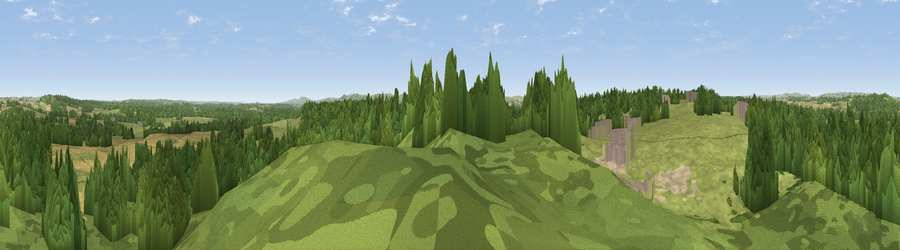

Viewpoint near Bovington
#24677 in England · top 50% of its area beats it · near BovingtonWhere it is
The exact computed spot (SY 84325 91025). Click the marker for map links.
The view, rendered

A 360° render of this exact spot computed from the terrain model, tree cover and land cover — summer colours, afternoon light, calibrated against photographs of famous viewpoints. Real trees, hedges and buildings will differ in detail.
The panorama
Grey silhouette: terrain skyline in each direction (720 bearings, Earth curvature and refraction included). Dashed green: skyline with trees (+15 m) and buildings (+8 m) as obstacles. Blue strip: how far the ground is visible on each bearing.
Where the view opens
Wedge length = distance to the farthest visible ground on that bearing (vegetation-aware). Rings at 10, 25 and 50 km.
What fills the view
53% woodland · 33% grassland · 11% cropland · 1% built-up · 1% bare ground
Angular shares of the visible panorama (visual magnitude), not map area. Landscape diversity 0.46 (0–1 Shannon).
Key numbers
More beautiful places nearby
The staircase of upgrades: each row has a higher view potential than everything closer. Driving times are estimates from straight-line distance, calibrated against real road routing — check an actual route before setting out.
| Place | Direction | Drive | Score |
|---|---|---|---|
| Viewpoint near Bere Regis | N · 3 km | ~7 min | 50.7 |
| Viewpoint near Bere Regis | NNE · 4 km | ~9 min | 56.1 |
| Whiteway Hill | SSE · 11 km | ~20 min | 85.0 |
| Rings Hill | SSE · 11 km | ~20 min | 87.5 |
| Viewpoint near Abbotsbury | W · 29 km | ~45 min | 89.0 |
| Viewpoint near West Bexington | W · 30 km | ~47 min | 89.5 |
| The Knoll | W · 31 km | ~48 min | 91.0 |
50.71864, -2.22341 · source: screening · position refined by local search. Computed location — check access rights before visiting.